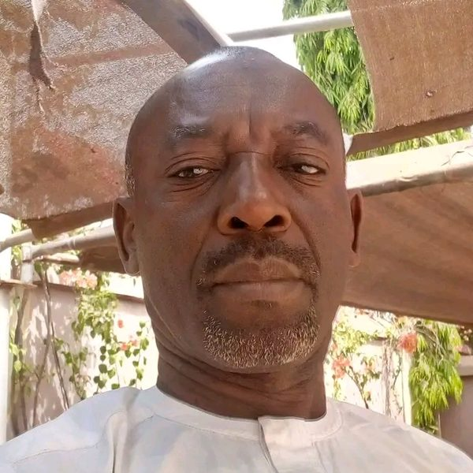
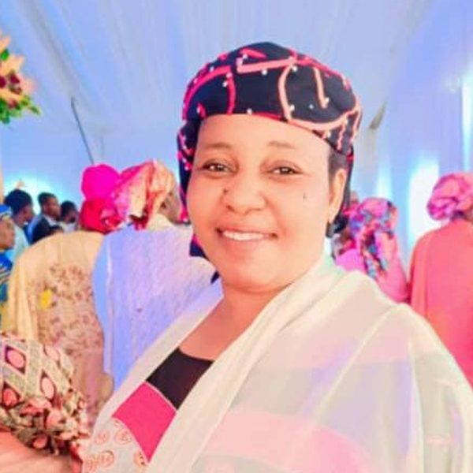
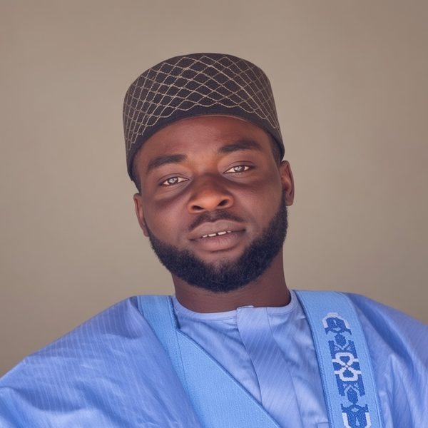
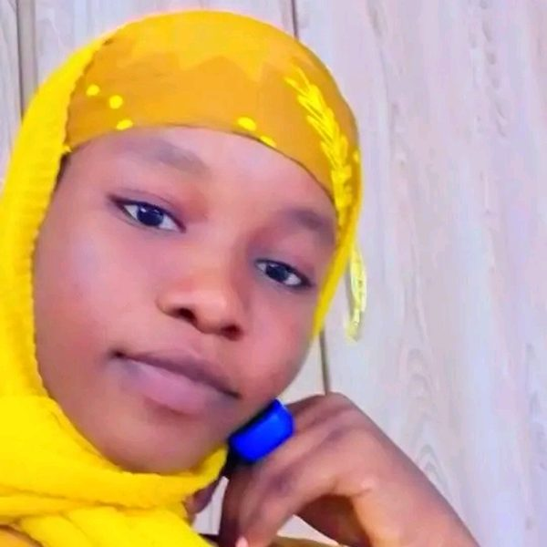
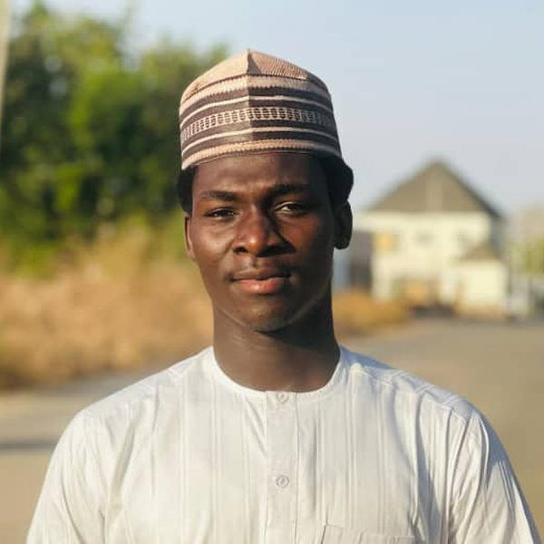
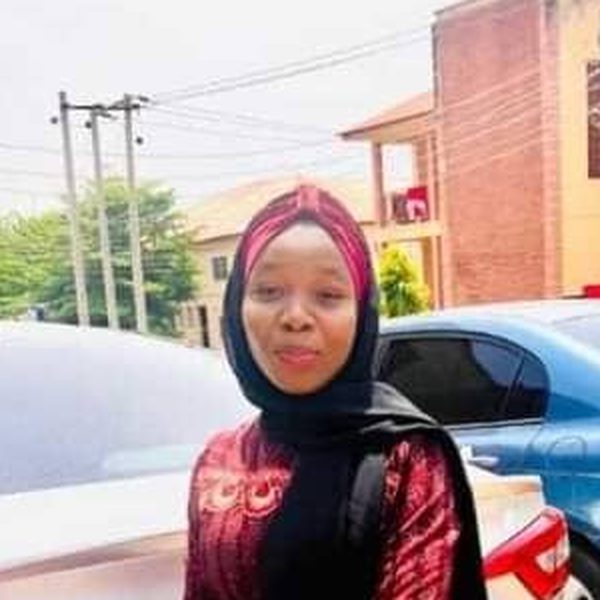
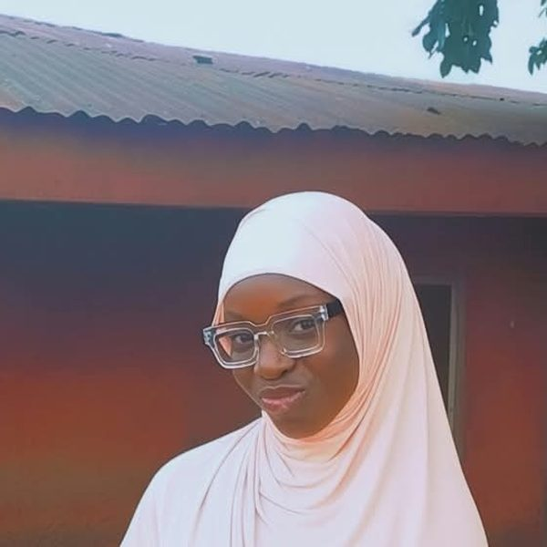
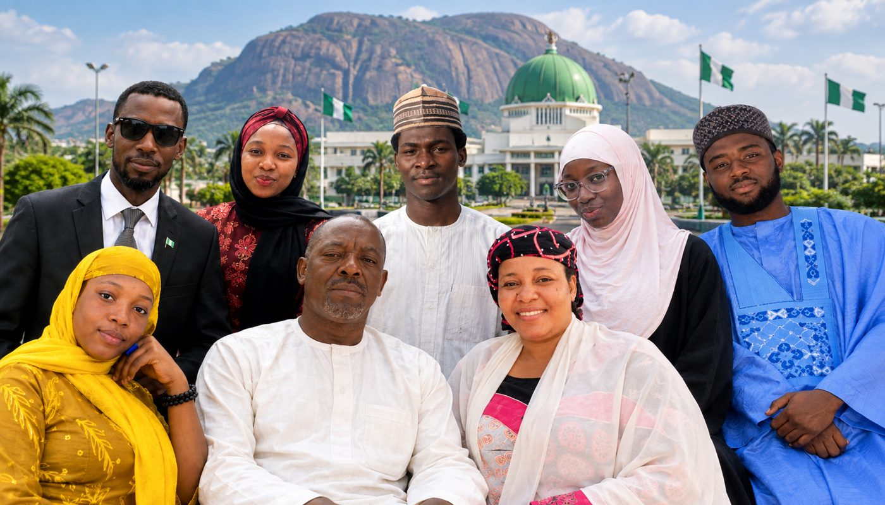

The Naali family belongs to Keana Local Government Area in Nasarawa State, a place the family describes as blessed with the salt-production heritage of their ancestors.
Alhaji Usamat Aliyu Naali and Hajiya Hauwa Jibrin Sahara are at the center of a home shaped by faith, education, respect, and togetherness.
Meet the parents
Father of the house · Of the Royal Family of Osana Agbo
The family traces his lineage to the Royal Family of Osana Agbo, and he is remembered as connected to the late King of Keana. A retired civil servant, he is the father of six children and the anchor of the family’s traditions and values.

Mother of the house · Educated in Jos, Nigeria
A civil servant who pursued her studies in Jos, Hauwa Jibrin Sahara is the mother of six children, three sons and three daughters, and wife to Usamat Aliyu Naali.
Presented in the order the family holds it, in the years they were born. Parents: Usamat Aliyu Naali & Hauwa Jibrin Sahara.





What holds the family together.
Central to how the family lives, across eight members and however far each child's path may take them.
Between parents and children, and among the six siblings a value the family names as its own.
On the fourth day of Eid Mubarak, the family comes together for its general family meeting each year.
Keana remains the home ground the parents and children return to and carry with them.
